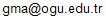

Merhaba
Ben Gökçe Mehmet AY
Doktoralı Makine Mühendisiyim.
Ben ve çalışmalarım hakkında bilgi edinmek ister doğru yerdesiniz.
Yeni Kitabım

Makine Mühendisleri için 100 Prompt
Sohbet tabanlı yapay zeka araçlarını en verimli şekilde kullanmanız için 100 özgün prompt.
Kitabı EdininTriboloji
Hareket eden tüm makineler için triboloji önemlidir.
Sürtünmenin azaltılması ya da arttırılması gerekebilir.
Aşınmanın kontrolü şarttır.
Yağlama işte o zaman önem kazanır.
Bilgi için: 
Araştırma Tekniği
Ar-Ge yapanlar ilk araştırmanın önemini bilirler. İşte bu aşamayı hızlandırmak ve üretilen/bulunan bilgiye ulaşmayı kolaylaştırmak için size Ar-Ge için kullanabileceğiniz bilişim araçları hakkında yardımcı olabilirim.
Bilgi için:
Mühendisliğin Yapay Zeka Mentoru
Kitaplarım
Bilimkurgu, fantastik ve mühendislik odaklı kitaplarıma göz atın:

Copyright © 2019–2025 Gökçe Mehmet AY
Beni Takip Edin
Güncellemeler için sosyal medya hesaplarıma göz atabilirsiniz.